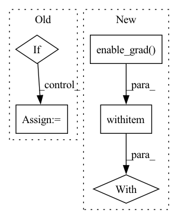

Pattern ID :7304
Before Change
elif step_size > 0:
p.data.add_(exp_avg, alpha=-step_size * group["lr"])
if half_precision:
p.data = p.data.half()
p.grad = p.grad.half()
return loss
After Change
loss = None
if closure is not None:
with torch .enable_grad():
loss = closure()
for group in self.param_groups:
for p in group["params"]:In pattern: SUPERPATTERN
Frequency: 3
Non-data size: 5
Instances Fragment ID: 24410038
Project Name: feng-lab/pytorch-image-models
Commit Name: a426511c95e131389237e4ed2696f5967bc66130
Time: 2021-08-18
Author: rwightman@gmail.com
File Name: timm/optim/adabelief.py
M Class Name: AdaBelief
N Class Name: AdaBelief
M Method Name: step(2)
N Method Name: step(2)
M Parent Class: Optimizer
N Parent Class: Optimizer
M File Name: timm/optim/adabelief.py
N File Name: timm/optim/adabelief.py
M Start Line: 96
M End Line: 203
N Start Line: 98
N End Line: 201
Before Change
// create the data loader
self.dataset = DataSet(pos)
if self.cuda:
kwargs = {"num_workers": num_threads, "pin_memory": True}
else:
kwargs = {"num_workers": num_threads}
self.dataloader = DataLoader(self.dataset,After Change
// check if we have to compute and store the grads
grad_mode = torch.no_grad()
if self.wf.kinetic == "auto":
grad_mode = torch.enable_grad()
// distribute the calculation
num_threads = 1
hvd.broadcast_parameters(self.wf.state_dict(), root_rank=0)
torch.set_num_threads(num_threads)
with grad_mode :
// sample the wave function
pos = self.sampler(self.wf.pdf)
if self.wf.cuda and pos.device.type == "cpu":
pos = pos.to(self.device)
Fragment ID: 24410046
Project Name: nlesc-jcer/qmctorch
Commit Name: 9c3e63cd2b3fe345a850beb13cc978a28a4945b0
Time: 2020-07-16
Author: nicolas.gm.renaud@gmail.com
File Name: qmctorch/solver/solver_orbital_horovod.py
M Class Name: SolverOrbitalHorovod
N Class Name: SolverOrbitalHorovod
M Method Name: single_point(3)
N Method Name: single_point(3)
M Parent Class: SolverOrbital
N Parent Class: SolverOrbital
M File Name: qmctorch/solver/solver_orbital_horovod.py
N File Name: qmctorch/solver/solver_orbital_horovod.py
M Start Line: 223
M End Line: 279
N Start Line: 220
N End Line: 276
Before Change
x1, x2 = ctx.function.reverse(y1, y2, mask)
Reversible.outputs = (x1, x2)
with torch.enable_grad():
if not x1.requires_grad:
x1.requires_grad = True
if not x2.requires_grad:
x2.requires_grad = True
y1, y2 = ctx.function(x1, x2, mask)
After Change
x1_grad = y1_grad + y1.grad
y1.grad = None
with torch .enable_grad():
x2.requires_grad = True
fx2 = ctx.layer.f_block(x2, mask)
fx2.backward(x1_grad)
Fragment ID: 24410041
Project Name: rick-mccoy/reformer-pytorch
Commit Name: ba4ca176c189afc7a5ab76d9aea596478ea128a8
Time: 2020-01-15
Author: rickmccoy3141@gmail.com
File Name: model/reversible.py
M Class Name: Reversible
N Class Name: Reversible
M Method Name: backward(1)
N Method Name: backward(1)
M Parent Class: Function
N Parent Class: Function
M File Name: model/reversible.py
N File Name: model/reversible.py
M Start Line: 26
M End Line: 36
N Start Line: 24
N End Line: 49